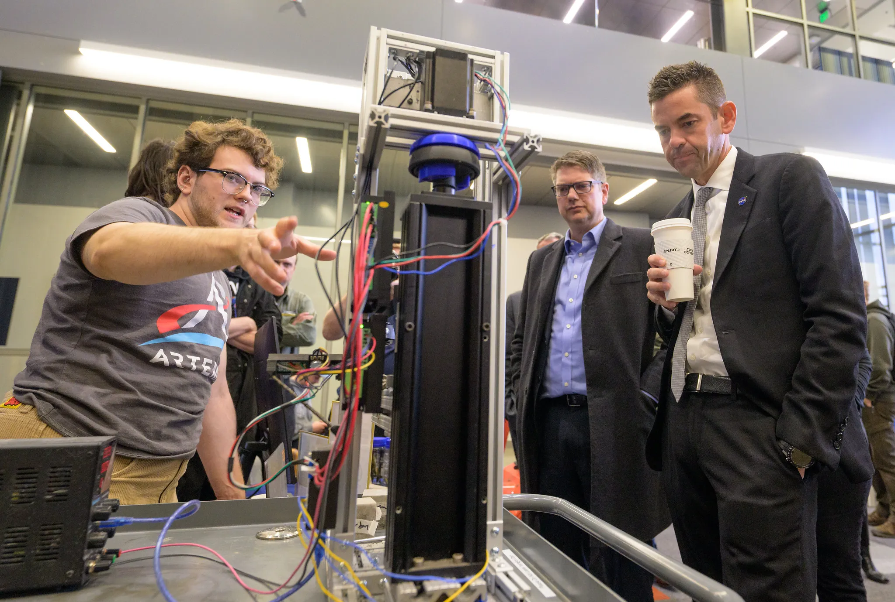

01
Alérgicos a clássicos? São Paulo e Corinthians sofrem contra rivais em 2026
Portal Tela · 04/11/2026 · 13:20 (Brasília)Fonte original ↗
 noticias.uol.com.brGuerra no Irã é 'a razão pela qual perdemos' as eleições, diz vice-presidente dos EUA
noticias.uol.com.brGuerra no Irã é 'a razão pela qual perdemos' as eleições, diz vice-presidente dos EUA The AustralianNZ TV host Paul Henry enters politics in shock ACT Party bidClimate CentralSea Level Rise Worsens Coastal Flooding and Storm SurgesMiddle East EyeMorning update
The AustralianNZ TV host Paul Henry enters politics in shock ACT Party bidClimate CentralSea Level Rise Worsens Coastal Flooding and Storm SurgesMiddle East EyeMorning update www.acritica.comCiberataques contra supermercados afetam 12 países na Europawww.msn.comBombardeio israelense deixa sete mortos no sul do Líbano
www.acritica.comCiberataques contra supermercados afetam 12 países na Europawww.msn.comBombardeio israelense deixa sete mortos no sul do Líbano businessday.ngAfrican leaders urged to unite, strengthen global influenceGrupo AMANHÃPatricia Palermo: cabo de guerra da economia brasileira
businessday.ngAfrican leaders urged to unite, strengthen global influenceGrupo AMANHÃPatricia Palermo: cabo de guerra da economia brasileira
NASA Breaking NewsNASA Space Grant Students Fuel Agency’s Inspiration TourCambridge University Press & AssessmentBase Scott: lições para um programa de exploração de Marte www.moneycontrol.comEmaar se oferece para comprar braço de construção por US$ 16,3 bilhões
www.moneycontrol.comEmaar se oferece para comprar braço de construção por US$ 16,3 bilhões Defesa em FocoTrump perde o Congresso: o que muda para China, Rússia e Brasil?Portal ImpalaZelensky critica reação muito fraca a ataques que mataram 40 pessoas em ZaporijiaCanaltechDave Bautista promete o Kratos mais intimidador já visto em série de God of WarUniverse TodayGiant Impacts Help Rocky Planets Retain Their AtmospheresThe Centre for Independent StudiesO que o próximo orçamento deve fazerwww.msn.comOs cientistas dizem que este El Niño pode ser o mais forte já registado. É aqui que o esqui no início da temporada pode ser melhor.Sada Elbalad EnglishChefe da Liga Árabe encontra-se com o presidente da Eslovênia para discutir os direitos palestinos e os desenvolvimentos regionaisInfoMoneyCongresso EUATribuna do SertãoUnião Europeia é ineficaz nas negociações sobre Ucrânia, aponta mídia
Defesa em FocoTrump perde o Congresso: o que muda para China, Rússia e Brasil?Portal ImpalaZelensky critica reação muito fraca a ataques que mataram 40 pessoas em ZaporijiaCanaltechDave Bautista promete o Kratos mais intimidador já visto em série de God of WarUniverse TodayGiant Impacts Help Rocky Planets Retain Their AtmospheresThe Centre for Independent StudiesO que o próximo orçamento deve fazerwww.msn.comOs cientistas dizem que este El Niño pode ser o mais forte já registado. É aqui que o esqui no início da temporada pode ser melhor.Sada Elbalad EnglishChefe da Liga Árabe encontra-se com o presidente da Eslovênia para discutir os direitos palestinos e os desenvolvimentos regionaisInfoMoneyCongresso EUATribuna do SertãoUnião Europeia é ineficaz nas negociações sobre Ucrânia, aponta mídia Globo RuralSoja mantém queda em Chicago com entrada da nova safra dos EUA no mercadoRepresentação da Comissão Europeia em PortugalComissão toma novas medidas para preparar os europeus para os crescentes riscos de criseFolha VitóriaModern Warfare 4: O Call of Duty que resgata a essência da franquia
Globo RuralSoja mantém queda em Chicago com entrada da nova safra dos EUA no mercadoRepresentação da Comissão Europeia em PortugalComissão toma novas medidas para preparar os europeus para os crescentes riscos de criseFolha VitóriaModern Warfare 4: O Call of Duty que resgata a essência da franquia NASA Breaking NewsHubble Reveals Cosmic Mysterynoticias.uol.com.brAtaques ucranianos deixam a Crimeia sem energia elétrica, afirma Rússiawww.theaustralian.com.au‘Pond scum’: veteran investor Mark Carnegie slams Anthony Albanese’s economyinklAs alterações climáticas estão a matar centenas de milhares de pessoas – preocupações de um especialista renalReutersEmaar considera aquisição de braço de construção avaliada em quase US$ 14 bilhões, informa Bloomberg NewsThe Washington PostEleitores punem Trump com virada histórica para os democratasUOL NotíciasCiberataques a supermercados já atingem 11 países da EuropaNotícias AgrícolasUSDA anuncia venda de 167 mil toneladas de soja dos EUA para a Espanha
NASA Breaking NewsHubble Reveals Cosmic Mysterynoticias.uol.com.brAtaques ucranianos deixam a Crimeia sem energia elétrica, afirma Rússiawww.theaustralian.com.au‘Pond scum’: veteran investor Mark Carnegie slams Anthony Albanese’s economyinklAs alterações climáticas estão a matar centenas de milhares de pessoas – preocupações de um especialista renalReutersEmaar considera aquisição de braço de construção avaliada em quase US$ 14 bilhões, informa Bloomberg NewsThe Washington PostEleitores punem Trump com virada histórica para os democratasUOL NotíciasCiberataques a supermercados já atingem 11 países da EuropaNotícias AgrícolasUSDA anuncia venda de 167 mil toneladas de soja dos EUA para a EspanhaO governo federal e a Rede Nacional de Ensino e Pesquisa (RNP) lançaram nessa terça-feira (3) um painel que permite explorar como as mudanças climáticas podem alterar a temperatura e o regime de chuva no Brasil e na América Latina nas próximas décadas. A ferramenta integra o AdaptaBrasil, plataforma que reúne indicadores de risco climático para os 5.570 municípios brasileiros, considerando fatores como ameaças climáticas, exposição e vulnerabilidade . Essas informações ajudam a identificar áreas mais suscetíveis aos impactos das mudanças climáticas e a orientar decisões sobre medidas de adaptação. Com o novo painel, a plataforma passa a ofere
O apresentador de TV da Nova Zelândia, Paul Henry, entra na política em choque com a oferta do ACT Party The Australian
Os corpos de duas pessoas mortas com sinais do ataque de um urso foram encontrados no oeste do Canadá, informaram autoridades locais. Segundo veículos de imprensa canadenses, as duas vítimas são mãe e filha. Elas estavam desaparecidas desde o último domingo, quando saíram para dar um passeio perto de casa, próximo da localidade de Bella Coola, na província de Columbia Britânica. Em nota difundida na noite de terça-feira (3) nas redes sociais, os serviços provinciais encarregados da proteção da natureza informaram que haviam encontrado a segunda vítima de um suposto ataque de um urso-grizzly. Na segunda-feira tinha sido encontrado um dos corpo
Invasões a sistemas de refrigeração causaram perda de alimentos e mobilizaram órgãos de segurança em diversos governos.
Scott Base: lições para um programa de exploração de Marte Cambridge University Press & Assessment
A empresa planeja oferecer 15 dirhams por ação (US$ 4,08) pela Emaar Development PJSC, avaliando a empresa em 60 bilhões de dirhams. Embora isso represente um ágio em relação ao último fechamento da empresa, de 13,90 dirhams, está bem abaixo dos níveis negociados antes do início da guerra.
Chefe da Liga Árabe encontra-se com o presidente da Eslovénia para discutir os direitos dos palestinos e os desenvolvimentos regionais Sada Elbalad English
A mudança climática está matando centenas de milhares de pessoas – preocupações de um especialista em rins
Emaar considera aquisição de braço de construção avaliado em quase US$ 14 bilhões, informa Bloomberg News Reuters

Cerca de 50 mil etíopes de Moyale fugiram para o lado queniano desta cidade fronteiriça, após a eclosão de combates entre duas comunidades por disputas terr...

The Ningen: O gigante sem rosto sob os mares congelados da Antártida Vocal

Proposta passou na Casa em dois turnos sem votos contrários e abre caminho para governo Lula criar o Ministério da Segurança Pública.

Descoberta foi feita por equipe liderada por cientistas de Cambridge, no Reino Unido, a partir de experimento realizado no Grande Colisor de Hádrons.
Nicole Junkermann sobre a nova era da exploração espacial: voos tripulados, a Lua e a nave estelar HackerNoon da SpaceX

“Apoiamos esta mensagem”, afirma Mohammed Bagher Ghalibaf, enquanto Donald Trump reconhece o papel do conflito na derrota do Partido Republicano.
Uma Terra virtual sem vida ajudará os cientistas a encontrar vida no universo dos exoplanetas hoje
Reunião entre S.E. Mahmoud Ali Youssouf, Presidente da Comissão da União Africana, e S.E. Jiang Feng, Embaixador da República Popular da China na República Federal Democrática da Etiópia e Representante Permanente junto à União Africana
South Africa believes that the Democratic victory in the 'midterms' will mark "a new era in the world of relations" Demócrata
A Agência Nacional de Vigilância Sanitária (Anvisa) aprovou, nesta quarta-feira (4), o registro para o medicamento Wegovy (semaglutida) com administração por via oral . O remédio só era disponível no Brasil na forma de solução injetável para administração subcutânea. A nova apresentação prevê administração de comprimidos uma vez ao dia, com escalonamento progressivo de dosagem, iniciando com 1,5 miligramas (mg) e avançando para 4 mg e 9 mg, até atingir a dose diária de manutenção recomendada, fixada em 25 mg. Notícias relacionadas: Anvisa aprova 5 novas canetas para tratamento de diabetes e obesidade. O medicamento deve ser tomado em jejum, c
Governo busca reembolso de passagem aérea de US$ 48 mil FBC News
Marrocos insta a União Africana a dar à juventude um papel mais pleno nos processos de paz The North Africa Post
Etiópia expulsa diplomatas sudaneses enquanto dois lados trocam acusações The Arab Weekly
Bispo levanta a situação dos cristãos apanhados na guerra civil sudanesa www.christiantoday.com
A NASA está correndo contra o tempo para salvar o Telescópio Espacial Hubble Science Daily
‘Decisões difíceis’: a dica de Albo sobre como gastar News.com.au
Notícias: #Etiópia expulsa #diplomatas sudaneses à medida que as tensões regionais se aprofundam Addis Abeba – A Etiópia ordenou que seis membros da equipe diplomática sudanesa deixassem o país dentro de 48 horas, disse um alto funcionário etíope à Reuters na quarta-feira, aumentando ainda mais o Facebook

Após um curto período de armazenamento após chegar ao Porto Espacial Europeu na Guiana Francesa, o satélite MetOp Segunda Geração-B1 foi transferido para uma sala limpa e removido do seu contentor de transporte. A equipa prepara-se agora para reativar esta “bela adormecida” e iniciar as verificações e preparativos finais antes do seu lançamento, previsto para o final do ano.
Programa das Nações Unidas para o Desenvolvimento

Enquanto os sul-africanos votam nas eleições locais, os residentes dizem à BBC que estão cansados da má qualidade dos serviços que recebem.